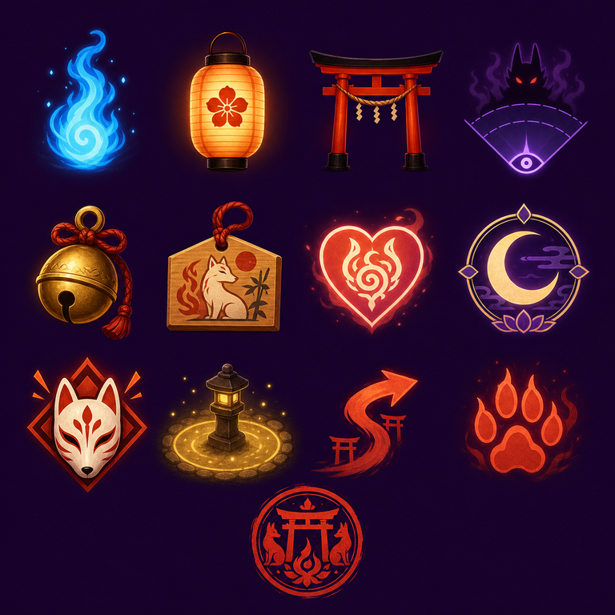

Score 0
Best 0
Seals ♡♡♡
Alert 0%
Combo x1
Wisps 4/4
Moon 0%
Cam 0°
First Torii Spark
Light 3 lanterns in order
Lanterns: 1 → 2 → 3
Keep 4 wisps · Alert < 35% · Ring 1 bell
Press Start to begin the vigil.
Akane Grand Vigil ignites — endless dusk commissions unlocked!

Call wisps close, then step toward the first lantern. Warm pools hide foxfire from cones.
Prompt
Vigil Paused
Resume when the crossing cones open. Save Moon Veil for stairs and use Suzu Bell as cones turn inward.
Prompt
- WASD/Arrows move · Q/E Camera · Space Call/Release · 1 Lantern · 2 Bell · 3 Ema · Shift/M Moon Veil · P Pause · R Restart.
- Safe light pools glow gold. Shadow-yokai cones glow violet. Moon Veil paints cyan preview arcs.
Vigil Complete